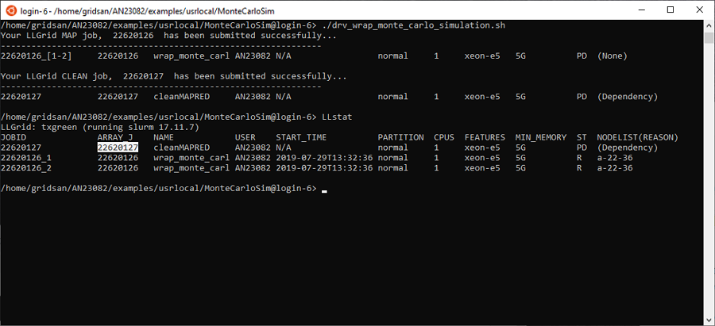
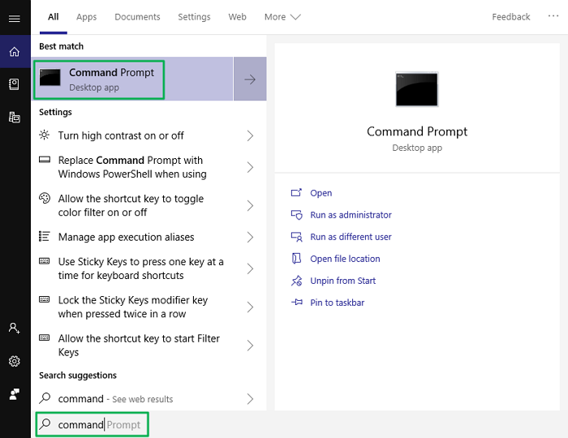

Preferred Shells
Why do I need a shell?
If you use a Jupyter Notebook or the MATLAB® GUI, for the majority of your work you probably won't need to log into the login node of the SuperCloud system. However, at some point, there may be tasks that you will need to perform that will require you to log into a login node. Here are some examples of things that you may have to do from a login node:
- Downloading data or packages, or anything else that requires an internet connection
- Check what resources are currently available
- Launch your job using a batch script
- Check the status of your job
- Kill a job
- Set up your environment (e.g., use module files, create your own conda environment, download and build a 3rd party software package)
- Compile your code
- Copy or search through files
In order to log into SuperCloud, you will need to run a shell on your desktop. Linux and Mac OS desktops come with a Linux shell already installed, the Terminal.
For users with a Windows 10 desktop, there are many options for shells that you can use to access SuperCloud. Here we will provide a list of shells that we recommend for accessing SuperCloud, and some that we don't recommend.
Once you are logged into a login node, you will be at the Linux shell command line, where you'll have to issue Linux commands. If you haven't used Linux before or need a brief refresher, see our Basic Unix Commands page for a list of commands that should cover most, if not all, of what you'll need to do, along with links to additional resources if you'd like to learn more.
In addition to the standard Linux commands, we provide some job
management commands and job
submission commands (LLsub,
LLMapReduce) that can also be issued from the
Linux shell command line or a shell script.
Recommended shells for Windows users
In the sections that follow, we provide instructions for installing the shells that we recommend, and how to copy and paste in these shells.
Please note that most of these shells have their own location where they store ssh keys, so if you generate keys in one of these you may have to do some additional configuration to use another shell.
Windows Subsystem for Linux
Launching WSL
If you haven't already set up the Windows Subsystem for Linux and installed the Ubuntu terminal, you can find directions on how to do that here. Once they are set up, launch Ubuntu from your start menu
Enabling copy and paste to/from the WSL shell (Ubuntu)
- Right click on the icon in the top left corner of the window and select Properties

- In the Properties window, select the Options tab. In the Edit Options section, enable QuickEdit Mode, then OK.

Copying and Pasting text to/from the WSL shell (Ubuntu)
In the following example we will copy a job number from the output of
LLstat, then paste the number to the end of the LLkill command, to
kill the job.
- Highlight the text that you want to copy 
- Press the enter key to copy the highlighted text. The text will no longer be highlighted, but it has been copied to your clipboard.
- Position your cursor to the place where you want to paste the text. This can be in the same Ubuntu shell window, in an email
message, in a new window, etc. To continue with this example, we
type
LLkillat the Linux prompt of our Ubuntu window, then we are ready to paste the copied job number to the end of the command. Notice the cursor is located afterLLkill. - Press the right mouse button to paste the text to your current cursor position
Windows Command Prompt
Launching the Windows Command Prompt
To launch the Windows Command Prompt on your Windows 10 desktop, type "command" into the search box on the taskbar and select Command Prompt from the Best match list.

Copying and pasting to/from the Windows Command Prompt
Follow the instructions in the sections "Enabling copy and paste to/from the WSL shell (Ubuntu)" and "Copying and Pasting Text to/from the WSL shell (Ubuntu)". Once Quick Edit Mode is enabled, you can also use the standard Windows copy and paste shortcut keys Ctrl-C and Ctrl-V.
Windows PowerShell
Launching the Windows PowerShell
To launch the PowerShell on your Windows 10 desktop, type "powershell" into the search box on the taskbar and select Windows PowerShell from the Best match list. Make sure you do not select the ISE or x86 versions.
Copying and pasting to/from the Windows Powershell
Follow the instructions in the sections "Enabling copy and paste
to/from the WSL shell (Ubuntu)" and "Copying and Pasting Text to/from
the WSL shell (Ubuntu)". Once Quick Edit mode is enabled, you can also
use the standard Windows copy and paste shortcut keys Ctrl-C and Ctrl-V.
Jupyter Notebook Terminal
Launching the Jupyter Notebook Terminal
If you have a Jupyter Notebook session running in your browser, you can open a terminal window from your notebook dashboard by clicking on the New button, then select Terminal from the pull down menu to launch a terminal session on the SuperCloud system.

How to copy/paste from the Jupyter Notebook Terminal
In the following example we will copy a job number from the output of
LLstat, then paste the number to the end of the LLkill command, to
kill the job.
-
Highlight the text that you want to copy

-
Right click and select Copy. You cannot use Ctrl-C because it will be interpreted by the Linux shell.

-
Position your cursor to the place where you want to paste the text. This can be in the same Jupyter Notebook terminal window, in an email message, in a new window, etc. To continue with this example, we type
LLkillat the Linux prompt of our Jupyter Notebook terminal window, then we are ready to paste the copied job number to the end of the command. Notice the cursor is located afterLLkill.
-
Press the right mouse button and click on Paste to paste the text to your current cursor position. You cannot use
Ctrl-Vbecause it will be interpreted by the Linux shell.


Shells that we do not recommend
We do not recommend the following shells on Windows because they do not use OpenSSH. Access to the SuperCloud works best with ssh keys that are generated by OpenSSH.
- cygwin
- puTTY
- SecureCRT
- X-Win32